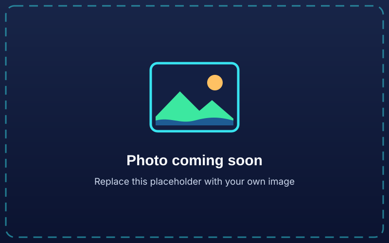
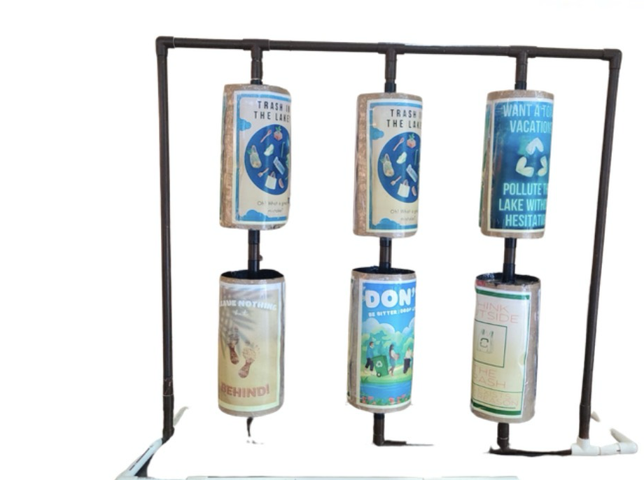

Prevent · 📢
Awareness campaign
- → Educate people about lake pollution
- → Encourage responsible waste disposal
- → Point people to clean-up activities
About the project
Lake Sentry is an environmental technology and awareness project that reduces and manages floating waste in lakes, focusing on the urban lakes of Hyderabad. It combines research, engineering, awareness and community action.
What it does
If waste keeps entering a lake, a clean-up machine only treats the symptom. So Lake Sentry grew into a dual-solution framework, connected by an online platform.
Prevent · 📢
Remove · 🤖
Connect · 🌐
PREVENT + REMOVE + CONNECT → CLEANER, BETTER-MAINTAINED LAKES
The problem
Lakes are important freshwater ecosystems that support aquatic organisms, surrounding habitats and the communities that depend on them. Many urban lakes are polluted by improperly disposed waste, plastic, sewage and more. Lakes across Hyderabad, including Rangadhamuni, Malkam Cheruvu and Film Nagar Lake, are polluted by floating trash and debris. Lake Sentry's primary focus is floating solid waste:

What this project does not claim to solve: sewage discharge, industrial effluent and dissolved chemical contamination need separate regulatory and infrastructure solutions. Lake Sentry's scope is floating solid waste.
Motivation & research
Instead of only cleaning lakes by hand after pollution builds up, could an affordable machine keep removing floating waste, while awareness efforts tackle the source?
Visits to lakes around Hyderabad showed plastic, packaging and other waste piling up, especially where waste-management infrastructure seemed inadequate. That question became the foundation of Lake Sentry.
1500s
A man-made lake is built
Hussain Sagar is constructed as an artificial lake.
Until the 1950s
Almost free of pollution
The lake stays in relatively good condition for centuries.
Recent decades
Waste channels, shrinkage, biodiversity loss
Encroachment shrinks the lake and biodiversity is severely lost.
Today
Ground truth from student site visits
Keystone International School students visited Hyderabad lakes and photographed floating trash and land waste around them, matching what secondary sources describe.
Scientific literature and reports on:
Research on freshwater systems shows plastic pollution isn't limited to oceans: lakes and rivers act as both repositories and pathways for plastic.
This matches the survey: the core issue isn't ignorance. Most people already understand the danger. What's missing is the will to act on it.
Remove · the physical solution
V1 is a remote-controlled floating machine that collects debris from a lake's surface. It deliberately uses a simple, affordable design rather than expensive or complex technology.
Choose a part to see how it works.
Select a part above, or click one in the diagram, to see how it works.

Engineering iteration log
The conveyor mesh slipped on its rotating rod, moving waste the wrong way instead of lifting it.
The slipping was traced to too little grip between the smooth rod and the mesh.
The rod was modified with extra points of friction so the mesh could grip and move with it.
The conveyor now carries waste reliably upward into the storage compartment.
V1 → V2 · proposed, not finalised
The aim isn't to make V2 bigger. It's to make it better:
more efficient + more reliable + more environmentally compatible + more intelligent
Prevent · the awareness solution

Connect · LakeSentry.in
More than a page about the prototype, LakeSentry.in brings the whole initiative together:
Problem → Research → Evidence → Awareness → Community → Technology
Explore Hussain Sagar, Durgam Cheruvu, Osman Sagar, Himayat Sagar, Pebble City Lake and more. Hover or select a lake to open its page.
Open the mapTogether they form a growing digital record of Hyderabad's lakes.
Anyone can submit a clean-up or conservation effort: its name, description, location, organisation, date, activity type, links, photos and how to take part.
Submit → Review → Approve / Reject → Publish
Nothing is published automatically, which keeps the network accurate and appropriate.
Who it's for
The machine's main stakeholders and the awareness campaign's audience aren't the same people. Lake Sentry isn't meant to work alone: lasting impact means teaming up with the people already invested in Hyderabad's lakes.
Deployment partner
Bodies that maintain urban water bodies. Partnering with GHMC / HYDRAA on lake access and permissions for each new site.
Deployment partner
Responsible for urban environmental management.
Partner
Joining existing restoration and clean-up efforts instead of duplicating them.
Supporter
Funding and support to manufacture and scale once the model is proven.
Beneficiary & operator
People living near lakes who feel the effects of pollution, some of whom could be trained as volunteer operators.
Awareness audience
Hyderabad residents, students and environmentally engaged citizens online.
Impact & planning ahead
Core metric: weight of trash recovered per km² for each lake cleaned, compared across lakes to show which need the most attention. Campaign reach is tracked through engagement and clean-up event turnout.
| Risk | Mitigation |
|---|---|
| No standing permission to operate on municipal lakes | Partner with HYDRAA / GHMC and lakeside resident associations before each new lake. |
| The monsoon halts clean-ups and can damage electronics | Schedule clean-ups outside peak monsoon months; weatherproof the CPVC frame and electronics housing. |
| An unattended bot at the lake bank could be damaged or stolen | Store it off-site between clean-ups and operate only in supervised sessions until a lockable dock is affordable. |
| Scaling to more lakes needs more than one operator | Train volunteer operators from partner nonprofits and eco-clubs during the pilot phase. |
| Dimension | Current status |
|---|---|
| Technical | V1 demonstrates basic flotation, propulsion, remote control and waste collection in controlled conditions. |
| Economic | The prototype uses simple, accessible components. Costs haven't yet been formally compared with commercial systems. |
| Operational | Battery life, storage capacity and operator needs are still being measured through testing. |
| Environmental | Effects on aquatic organisms, material safety and disposal of collected waste need further evaluation. |
| Social | Survey data shows strong public support for technological clean-up (80% of 40 respondents). |
| Institutional | Relevance to NGOs and government lake bodies is a hypothesis to test through outreach and pilots. |
Lake Sentry does not claim full real-world feasibility until enough field testing has been done.
UN Sustainable Development Goals
🌊 SDG 6
🏙️ SDG 11
♻️ SDG 12
Encouraging responsible disposal, less littering, better waste practices and awareness of the consequences of consumption. This is closely tied to the prevention side of Lake Sentry.
🐟 SDG 14 (supporting)
Less floating plastic in freshwater helps protect aquatic ecosystems and reduces waste travelling downstream. This is a supporting goal, not the primary one.
Lake Sentry contributes to and aligns with these goals; it does not claim to achieve them on its own.
The team
Grade 9 · Keystone International School, Hyderabad
Passionate about innovation, prototyping and cleaning lakes, with two years spent on lake cleaning as a personal passion project. Lake Sentry began as a class assignment. When classmates moved on to their own passion projects, Akhil kept going, driven by care for the problem and a determination to see it through.